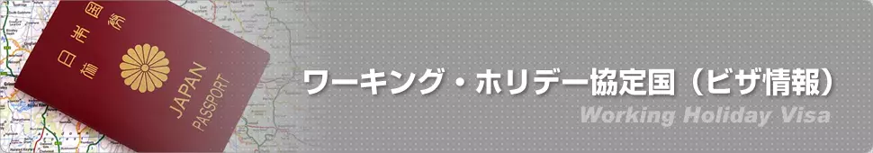

<?php
require_once '../include/header.php';
require_once '../include/links.php';

$links_obj = new Links();
$header_obj = new Header();

$header_obj->title_page = 'オランダリアのワーキングホリデービザ情報';
$header_obj->description_page = 'チリのワーキングホリデービザ取得のステップや注意事項を掲載しています。チリへ滞在される方は参考になさってください。';
$header_obj->fncMenuHead_imghtml = '';
$header_obj->fncMenuHead_h1text = 'ワーキングホリデー協定国（オランダ） | ワーホリビザ情報';

$header_obj->display_header();

include('../calendar_module/mod_event_horizontal.php');
?>
<div id="maincontent">
  <?php echo $header_obj->breadcrumbs('country'); ?>

  <div style="clear:both; height:10px;">&nbsp;</div>
  <?php $header_obj->display_visa_links(); ?>
  
  </br></br>

  <h2 class="sec-title">申請条件</h2>
  <p class="text01">
    WHP/WHSの主な目的と基本原則は、オランダの文化と社会を知ることである。<br>
    この基本原則は、2つの相手国・地域間の覚書（MoU）またはNota Verbale（Nota Verbale）に記載されています。<br>
    同じ基本原則に基づき、オランダの若者が協定を結んでいる国への渡航も許可されています。<br>
    <br>
    参加する若者は、WHP/WHSの主目的に反する仕事をすることは許されません。<br>
    したがって、休暇を経済的に支援するために付随的に働くことのみが認められています。<br>
    この付随的な労働を行うためには、雇用主はTWVを必要としません。<br>
    正規労働移民、高度なスキルを持つ移民、学生、auのペアは、WHPとWHSを利用できません。<br>
    彼らは、その特定の滞在目的のための滞在許可証を申請しなければなりません。<br>
     <br>
    参加している若者は、短期留学やコースに参加することができます。<br>
  </p>

  <h2 class="sec-title">条件</h2>
  <p class="text01">
    誰にでも当てはまる条件がいくつかあります。<br>
    これらの条件に加えて、以下の条件が適用されます。<br>
     <br>
    -日本または韓国の国籍をお持ちの方。<br>
    -文化交流のためにオランダに来ていること。オランダの文化や社会に親しむことを主な目的としていること。<br>
    -ビザ申請時の年齢が18歳以上30歳以下であること。<br>
    -扶養している子供を同伴していないこと。<br>
    -過去にオランダでの交流のための滞在許可証を持っていないこと。<br>
    -有効なパスポートを持っている事。<br>
    -往復航空券を持っているか、航空券を購入するのに十分な資金を持っていることを証明することができること。<br>
    -オランダでの最初の滞在期間中の資金を持っていること。<br>
    -オランダ滞在中、医療保険及び健康保険に加入していること。<br>
    -日本との間で締結されたNota Verbaleおよび韓国との間で締結された覚書に記載されているその他のすべての要件を満たしていること。ビザ申請書を提出する時点で、自身の国籍の国に居住地があることが含まれる。<br>
    <br>
    費用<br>
    この申請には58ユーロがかかります。<br>
  </p>

  <div class="top-move">
    <p><a href="#header">▲ページのＴＯＰへ</a>
      <br>
      ※オランダ大使館が公開している英語文章を翻訳した内容となっています。現本は下記をご参照くださいませ。
    </p>
  </div>

  <h2 class="sec-title">Main purpose WHP/WHS</h2>
  <p class="text01">
    The main purpose and basic principle of a WHP/WHS is to get acquainted with Dutch culture and society. This basic principle is stated in a Memorandum of Understanding (MoU) or a Nota Verbale between the two partner countries/territories. On the same basic principle, the partner country/area also allows young Dutch people access to their country/area.<br>
    <br>
    The participating young person is not allowed to do work that is contrary to the main purpose of the WHP/WHS. Therefore, they are only allowed to incidentally work to financially support the holiday. In order to be able to carry out this incidental work, the employer does not need a TWV. Regular work migrants, highly skilled migrants, students and au pairs can not make use of the WHP and WHS. They have to apply for a residence permit for that specific purpose of stay.<br>
    <br>
    For more specific information on employment rights, please click 'Right to work' at the bottom of this page.<br>
    <br>
    The participating young person may follow a short study or course.<br>
  </p>

  <h2 class="sec-title">CONDITIONS:</h2>
  <p class="text01">
    There are a number of conditions that apply to everyone. In addition to these conditions, the following conditions apply to you:<br>
     <br>
    -You have the nationality of Japan or South Korea;<br>
    -You are coming to the Netherlands for cultural exchange. The main goal is to get acquainted with Dutch culture -and society;<br>
    -You are aged 18 to30 (inclusive) at the time of submitting the application for residence;<br>
    -You are not accompanied by dependent children;<br>
    -You have not previously had a residence permit for exchange in the Netherlands;<br>
    -You have a valid passport;<br>
    -You have a return ticket or you can demonstrate that you have sufficient financial resources to purchase a ticket;<br>
    -You have sufficient resources to support yourself financially during the initial period of residence in the Netherlands;<br>
    -You have health insurance with medical coverage in the Netherlands;<br>
    -You meet all other requirements, as stated in the Nota Verbale with Japan and the Memorandum of Understanding (MoU) with South Korea. This includes that, at the time of submitting the application for residence, you must have your main residence in the country of your nationality.<br>
  </p>

  <div class="top-move">
    <p><a href="#header">▲ページのＴＯＰへ</a>
      <br>
      ※掲載されているビザ情報は、2021/01/28に確認した情報です
    </p>
  </div>


  <!-- <div class="content-visa-new">
    <div style="padding: 0 20px">
      <p>2020年4月11日より開始予定のため、詳細なビザの情報が公開されておりません。</p>

      <p>情報のアップデートがあり次第、こちらでのページでご案内いたします。</p>
    </div>
    </br>
  </div> -->

  <h3 class="h3-01">外務省ＨＰで基本情報を確認しよう</h3>
  <ul class="list-visabasic">
    <li><a href="https://www.mofa.go.jp/mofaj/area/netherlands/index.html" target="_blank" rel="noreferrer">基本情報</a></li>
    <li><a href="https://www.anzen.mofa.go.jp/info/pcinfectionspothazardinfo_157.html#ad-image-0" target="_blank" rel="noreferrer">安全情報</a></li>
    <li><a href="https://www.orandatowatashi.nl/" target="_blank" rel="noreferrer">在外公館</a></li>
  </ul>
  </br>
  </br>
  <div class="clear">&nbsp;</div>

  <h3 class="h3-02">その他のワーキングホリデー協定国のビザ情報</h3>
  <?php $header_obj->display_visa_links(); ?>
  <?php $links_obj->display_links(); ?>
  <style>
    .linkbox {
      margin: 15px 15px 15px 15px;
      padding: 10px 20px 10px 20px;
      background-color: #FFE4B5;
      font-size: 10pt;
    }
  </style>
  <br />

</div>
</div>
</div>

<?php fncMenuFooter($header_obj->footer_type); ?>

</body>

</html>